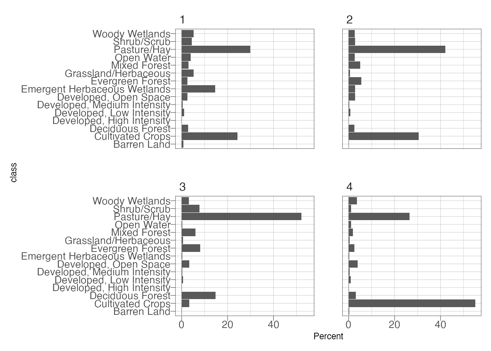
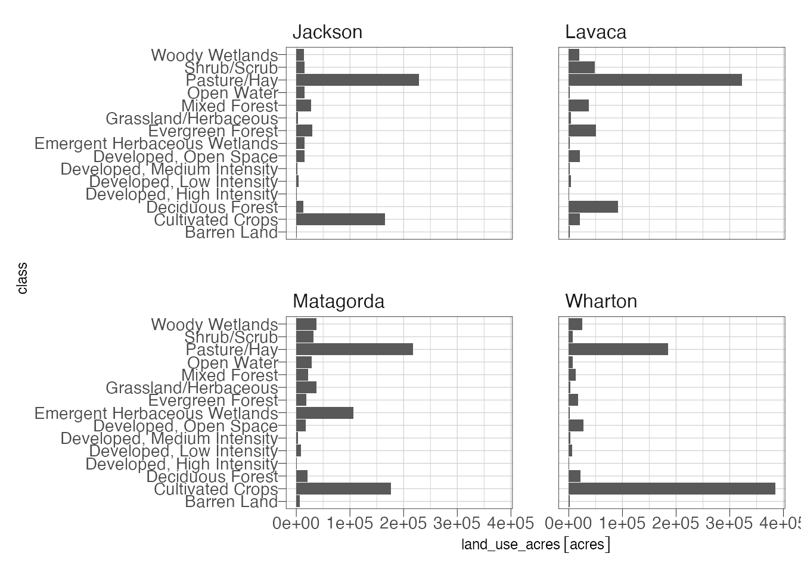

Extract Data
The raster::extract() function will extract the cells by class and feature and return a data.frame with an ID column corresponding to the feature (county in order of the county dataframe) and the land use class and a record for every cell in the feature. This takes about 6 minutes to run on my system. There is a newer package replacing raster called terra which should do this much faster. However, since it is still very much in development I am didn’t include it here. Also note that the extract function will transform the counties feature to the CRS of the raster before calculating.
ras_ext <- raster::extract(NLCD, counties, df = TRUE, factors = TRUE)## Warning in .local(x, y, ...): Transforming SpatialPolygons to the CRS of the
## Raster## Warning in showSRID(uprojargs, format = "PROJ", multiline = "NO"): Discarded
## ellps WGS 84 in CRS definition: +proj=merc +a=6378137 +b=6378137 +lat_ts=0
## +lon_0=0 +x_0=0 +y_0=0 +k=1 +units=m +nadgrids=@null +wktext +no_defs## Warning in showSRID(uprojargs, format = "PROJ", multiline = "NO"): Discarded
## datum WGS_1984 in CRS definitionhead(ras_ext)## ID txnlcd_NLCD_2016_Land_Cover_L48_nlcd
## 1 1 21
## 2 1 21
## 3 1 21
## 4 1 41
## 5 1 41
## 6 1 21Now we need to do some quick calculation. The data.frame returned by extract only provides the classification values so we need to create a legend dataframe to translate this for us.
legend <- tibble(class = c("Open Water",
"Perennial Ice/Snow",
"Developed, Open Space",
"Developed, Low Intensity",
"Developed, Medium Intensity",
"Developed, High Intensity",
"Barren Land",
"Deciduous Forest",
"Evergreen Forest",
"Mixed Forest",
"Dwarf Scrub",
"Shrub/Scrub",
"Grassland/Herbaceous",
"Sedge/Herbaceous",
"Lichens",
"Moss",
"Pasture/Hay",
"Cultivated Crops",
"Woody Wetlands",
"Emergent Herbaceous Wetlands"),
value = c(11, 12, 21, 22, 23, 24, 31, 41, 42, 43, 51, 52, 71, 72, 73, 74, 81, 82, 90, 95))Now we can calulcate the percentage land cover class in each county:
## calculate percentages
nlcd_summary <- ras_ext %>%
group_by(ID, txnlcd_NLCD_2016_Land_Cover_L48_nlcd) %>%
summarize(land_cover = n()) %>%
left_join(legend, by = c("txnlcd_NLCD_2016_Land_Cover_L48_nlcd" = "value")) %>%
ungroup() %>%
select(ID, class, land_cover) %>%
pivot_wider(names_from = class,
values_from = land_cover) %>%
mutate(Total = select(., `Open Water`:`Emergent Herbaceous Wetlands`) %>%
apply(1, sum, na.rm = TRUE)) %>%
pivot_longer(cols = `Open Water`:`Emergent Herbaceous Wetlands`,
names_to = "class",
values_to = "land_cover") %>%
mutate(Percent = land_cover/Total * 100)
## create a plot
ggplot(nlcd_summary) +
geom_col(aes(class, Percent)) +
coord_flip() +
facet_wrap(~ID) +
theme_ipsum_pub(axis_title_just = "c",
plot_margin = margin(10, 10, 10, 10),
ticks = TRUE) +
theme(panel.border = element_rect(color = "black",
fill = NA,
size = .25))
Now we have the percentage area of each class by county (although 1 through 4 isn’t informative). Next, calculate the area of the counties and join the county acreage to the nlcd summary table. From there, a little math to calculate the land cover acreage. Area will be calculated using a projected coordinate system, specifically Texas Centric Albers Equal Area, or epsg:6580.
counties <- counties %>%
st_transform(6580) %>% #project data
mutate(area = st_area(.)) %>% ## calculates are in units of m2 (projection units)
mutate(acres = units::set_units(area, "acres")) %>% ## the units library can deal with some conversions automatically, these units are "sticky"
mutate(ID = 1:4)
## join the county acreage to the nlcd summary
nlcd_summary %>%
left_join(as_tibble(counties) %>% ## as tibble so we remove the "geometry" which isn't needed here
dplyr::select(ID, county_acres = acres, county = CNTY_NM)) %>%
mutate(land_use_acres = county_acres * (Percent/100)) -> nlcd_summary ## note that county acres is put first so that units stick with the result## Joining, by = "ID"ggplot(nlcd_summary) +
geom_col(aes(class, land_use_acres)) +
facet_wrap(~county) +
coord_flip() +
theme_ipsum_pub(axis_title_just = "c",
plot_margin = margin(10, 10, 10, 10),
ticks = TRUE) +
theme(panel.border = element_rect(color = "black",
fill = NA,
size = .25))
nlcd_summary %>%
pivot_wider(id = class,
names_from = county,
values_from = land_use_acres) %>%
knitr::kable()| class | Matagorda | Jackson | Lavaca | Wharton |
|---|---|---|---|---|
| Open Water | 28716.9609 [acres] | 14398.8035 [acres] | 1513.5710 [acres] | 6423.9057 [acres] |
| Developed, Open Space | 17418.7151 [acres] | 14558.5364 [acres] | 20352.1965 [acres] | 26833.4555 [acres] |
| Developed, Low Intensity | 7691.2288 [acres] | 3675.7178 [acres] | 3146.8993 [acres] | 6037.6241 [acres] |
| Developed, Medium Intensity | 2392.0771 [acres] | 984.9631 [acres] | 874.3623 [acres] | 2031.2559 [acres] |
| Developed, High Intensity | 804.5353 [acres] | 390.1950 [acres] | 297.0450 [acres] | 652.7116 [acres] |
| Barren Land | 5448.4976 [acres] | 555.0041 [acres] | 830.5855 [acres] | 819.2934 [acres] |
| Deciduous Forest | 20112.0268 [acres] | 12841.9155 [acres] | 90785.2442 [acres] | 21463.3353 [acres] |
| Evergreen Forest | 18211.5536 [acres] | 29236.0265 [acres] | 50003.3613 [acres] | 16869.9805 [acres] |
| Mixed Forest | 21809.7556 [acres] | 26803.6533 [acres] | 36898.3254 [acres] | 12718.7147 [acres] |
| Shrub/Scrub | 31598.6077 [acres] | 14793.3979 [acres] | 47752.9643 [acres] | 7331.9531 [acres] |
| Grassland/Herbaceous | 36912.8465 [acres] | 2494.9804 [acres] | 3762.6262 [acres] | 2202.8806 [acres] |
| Pasture/Hay | 216458.9894 [acres] | 228373.1969 [acres] | 322229.2731 [acres] | 184387.0714 [acres] |
| Cultivated Crops | 175937.0917 [acres] | 164817.9492 [acres] | 20343.8101 [acres] | 384078.6576 [acres] |
| Woody Wetlands | 37341.3896 [acres] | 14087.6290 [acres] | 19181.9632 [acres] | 25077.2025 [acres] |
| Emergent Herbaceous Wetlands | 106236.1254 [acres] | 14739.4204 [acres] | 1527.6601 [acres] | 1311.8108 [acres] |

Text and figures are licensed under a Creative Commons Attribution-ShareAlike 4.0 International License unless otherwise indicated.